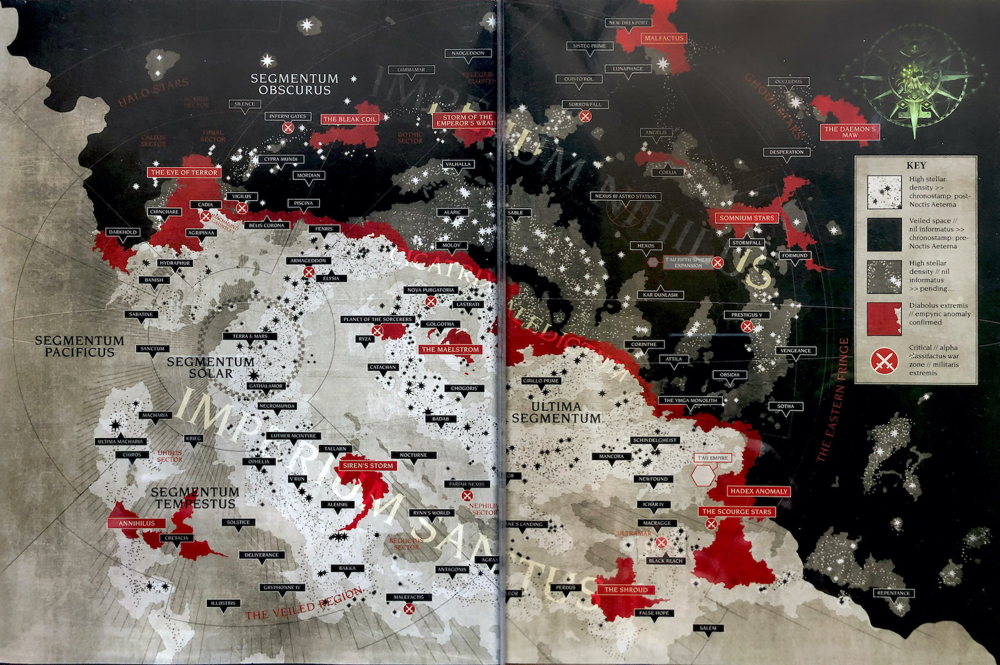

Estamos en el cuadragésimo primer milenio. Durante más de cien siglos, el Emperador de la Humanidad ha permanecido inmóvil en el Trono Dorado de la Santa Terra. Es el amo de la humanidad por voluntad de los dioses y amo de un millón de mundos por el poder de sus inagotables ejércitos. Es un cadáver podrido que se retuerce invisiblemente con el poder de la Era Oscura de la Tecnología. Es el Señor Carroñero del vasto Imperio del Hombre por quien se sacrifican diez mil almas cada día para que nunca muera de verdad. Sin embargo, incluso en su estado inmortal, el Emperador continúa Su vigilancia eterna. Poderosas flotas de batalla cruzan el miasma infestado de demonios de la Disformidad, la única ruta entre estrellas distantes, su camino iluminado por el Astronomicon, la manifestación psíquica de la voluntad del Emperador. Grandes ejércitos luchan en Su nombre en incontables mundos. Los más grandes entre Sus soldados son los Adeptus Astartes, los Marines Espaciales, súper guerreros bio-diseñados forjados en las fraguas de la guerra los cuales no sienten miedo alguno. Sus camaradas de armas son legión: la Guardia Imperial e incontables fuerzas de defensa planetaria, la siempre vigilante Inquisición y los Tecnosacerdotes del Adeptus Mechanicus, por nombrar solo algunos. Pero a pesar de todas sus multitudes, apenas son suficientes para mantener a raya la amenaza siempre presente para la humanidad de alienígenas, herejes, mutantes... y mucho, mucho peores. Ser un hombre en tiempos como estos es ser uno entre miles de millones de personas. Es vivir en el régimen más cruel y sangriento imaginable. Estas son las historias de aquellos tiempos. Olvida el poder de la tecnología y la ciencia, porque tanto se ha olvidado, que nunca se volverá a aprender. Olvida la promesa de progreso y comprensión, porque en el futuro sombrío y oscuro de Warhammer 40K solo hay guerra. No hay paz entre las estrellas, solo una eternidad de matanzas y carnicerías, y la risa de dioses sedientos.
El universo de Warhammer 40K es vasto y complejo, lleno de historias épicas, batallas interminables, y un futuro sombrío donde solo existe la guerra. A continuación, exploraremos la cronología principal y el lore de cada una de las facciones que conforman este oscuro universo.
Cronología Principal
El conocimiento de las largas eras de la historia humana ha quedado envuelto en sombras, enterrado bajo eones o simplemente perdido en la extensión del tiempo. Algunos historiadores siguen buscando el conocimiento, pero su trabajo puede compararse con sostener una vela contra el abismo oscuro. Los historiadores del Adeptus Administratum buscan, reúnen y recopilan diligentemente la historia de cada planeta dentro del Imperio. Quizás en el pasado esto se hacía con un propósito, pero hoy en día se trata más a menudo de una recopilación indiscriminada de datos, un proceso en el que los escribas copian el contenido sin pensar en los pergaminos y conservan registros completos con el temor constante de perder una sola letra intrascendente. La capacidad, o incluso el deseo, de traducir lo que significan estos hechos en un sentido más amplio está casi totalmente ausente y se encuentra sólo en unos pocos individuos que son observados con sospecha o tal vez castigados por su entusiasmo. La colección más grande y completa de tales registros existe debajo de la superficie de Terra , donde los colosales pasillos subterráneos se extienden hasta perderse de vista: vistas interminables de pergaminos de datos se elevan como montañas. Con la luz parpadeante de las velas proporcionadas por los Servo-cráneos flotantes , procesiones de curadores, escribanos y cifradores serpentean por los valles, intentando iluminar lo que fue. A lo largo de los años, las viejas verdades se han perdido debido a los "ajustes" y redacciones realizadas por los revisionistas del Adeptus Ministorum , la Inquisición e incluso los mismísimos Altos Señores de Terra .
EL PRINCIPIO DE LOS TIEMPOS Y LA GUERRA EN EL CIELO
10,000,000,000,000 A.C. Las estrellas más antiguas comienzan a fusionarse como crudos gigantes gaseosos. Los C’tan pre-sintientes comienzan a formarse. La Disformidad entra en la existencia, pero solo como el tenue eco metafísico del universo físico.
80,000,000 A.C. Los dinosaurios dominan Terra. Los Ancestrales han emergido como especie dominante de su mundo natal.
65,500,000 A.C. La tecnología de Portales de Disformidad se perfecciona. Los Ancestrales son los amos del 98% de la Galaxia y han impuesto sus propias nociones de orden y equilibrio en ella. Los Necrontyr alcanzan la inteligencia como especie estos Necrontyr tenian una enfermedad genética debido al Sol radiactivo de su planeta.
65,490,000 A.C. Los Necrontyr han forjado su propio imperio compuesto por los escasos sistemas solares situados alrededor de su mundo natal, declaran la guerra a los Ancestrales por no darles la inmortalidad. Los Ancestrales los destruyen y expulsan a los Necrontyr al borde galáctico y los abandonan. El primer Vórtice de emociones ha comenzado a formarse en la Disformidad.
65,485,000 A.C. Empiezan las luchas de sucesión la cuales fueron guerras civiles por todo el Imperio Necrontyr pero el Rey Silente el líder de los necrones descubre a los C’tan y los personifica en cuerpos físicos a través de los esfuerzos de la increíble tecnología de los Necrontyr. Los C'tan son los amos indiscutibles y dioses de los Necrontyr. Estos C'tan les sugieren a los Necrontyr que traspasen sus almas y conciencias a cuerpos metálicos para ser inmortales después de un año de reflexión el Rey silente acepta y comienza la Bio-trasferencia esta Bio-trasferencia tenía una trampa ya que consiguió traspasar la conciencia de los Necrontyr a los cuerpos metálicos de los necrones pero sus almas fueron consumidas por los C'tan es aquí cuando nacen los Necrones tal y como son conocidos en la actualidad del Milenio 41.
65,460,000 A.C. Los C'tan se han expandido por la Galaxia más rápido de lo que los Ancestrales creían posible. Han tomado completo control del escaso 2% de la Galaxia que no está controlado por ellos. Comienza La Guerra Celestial.
65,000,000 A.C. Los C'tan comienzan a volverse unos contra otros. Los Ancestrales como raza comienzan un lento declive a medida que los C'tan lenta pero inexorablemente comienzan a derrotarlos y consumirlos también. Los Ancestrales crean a los Eldars elfos super psíquicos los cuales puedes usar el poder de la disformidad para crear sus propios dioses y luchar contra los necrones pero aún son muy jóvenes y aún no están listos aún para luchar contra los C'tan y sus Necrones.
60,100,000 A.C. No más de doce C'tan han sobrevivido a su guerra interna, aún son más que suficientes para destruir a los Ancestrales y sus obras.
60,099,000 A.C. Los Eldar han desarrollado una cultura muy inteligente, no muy tecnológica, pero de grandes habilidades psíquicas. Comienzan a estudiar el vórtice potencial que un día será Khorne. Así es como nace Khaine, planeado por los Ancestrales como su mayor arma contra los C'tan. Los C'tan declaran la guerra a los Eldar. Por primera vez en millones de años los ejércitos de los C'tan se tambalean.
60,092,000 A.C. Los C'tan han comenzado a combatir en serio. Los Ancestrales se apresuran en la creación de los Krork super Orkos de 12 metros de altura casi igual de inteligentes que un primarca con el poder de la imaginación el cual puede moldear la realidad según sus creencias colectivas y otras formas de vida que los ayuden a luchar
60,080,000 A.C. Millones de años de guerra y adoración como dioses ha comenzado a afectar a las ya inexplicables mentes de los C'tan. Los Eldar son ya la raza más numerosa de la galaxia. Los vórtices del inmaterium empiezan a conformar la presencia de Tzeentch y Khaine es cada día más fuerte debido a la guerra contra los C'tan.
60,078,000 A.C. Cuatro C'tan sobreviven. Los Ancestrales siembran Terra. Los dioses de la Disformidad se han vuelto increíblemente poderosos, posiblemente iguales a los C'tan.
60,073,000 A.C. Debido sobre todo al continuo uso de la magia y los portales de Disformidad por los Eldar, muchos demonios, dioses y engendros de las profundidades de la Disformidad caminan por la Galaxia. Los Ancestrales están asediados y su antiquísima civilización está prácticamente destruida, los poquisimos que sobrevivieron huyeron a otra Galaxia.
60,062,000 A.C. Terminada la guerra en el cielo los necrones levantaron sus armas contra los C'tan y les derrotaron y los fragmentan en millones de pedazos para que sean usados como fuentes de energía uno de estos fragmentos del C’tan conocido como El Dragón del Vacío huye a Terra.
60,060,000 A.C Los Necrones agotados por los conflictos crean los mundos tumbas en donde descansaron durante 61,000,000 de años para que el creciente imperio eldar surja y decaiga y luego ellos al ser infinitos limpiar los restos y adueñarse de la galaxia.
60,060,000 - 50,000,000 A.C Los eldars se consolidad como los gobernantes de la galaxia y los Krorks involucionan a los Orkos.
50,000,000 A.C - 30,000 D.C Los Eldars estaban aburridos ya que eran inmortales y tenían una tecnología que tenía resueltas TODAS sus preocupaciones así que para que hubiese algo de interesante en sus vidas los Eldars empezaron a experimentar con el placer primero eran cosas sencillas como la meditación, comer, drogas etc pero se fue degradando mas ha escala galactica matafollando todo lo que encontraban.
EL NACIMIENTO DEL EMPERADOR EL PROGRESO DE LA HUMANIDAD Y LA ERA DORADA DE LA TECNOLOGÍA
12,000 - 9,000 A.C. Nacimiento del Emperador en Anatolia central.
8,900 A.C - 3,000 D.C El Emperador descubre sus poderes psíquicos y su inmortalidad desde ese entonces el ha ido guiando y protegiendo a la humanidad para que no se destruya a sí misma con el sueño de crear un imperio galáctico libre de superstición y de la influencia del los dioses del caos creando civilizaciones como babilonia, persia, Roma y muchas más siendo personajes muy influyentes en la historia.
303 D.C El Emperador se enfrenta al fragmento de C'tan que cayó en la tierra y lo selló en marte
3,100 D.C Marte es terraformado.
3,200 D.C Marte es colonizado.
3,200 - 4,700 D.C Se coloniza el resto del sistema Solar.
4,700 D.C Se Descubre la Disformidad.
4,700 - 16,000 D.C Se extraen los recursos de la nube de Oort y se exploran las estrellas de la profundidad del espacio y se colonizan algunos planetas.
16,000 - 21,000 D.C Los humanos exploran la galaxia, primeros contactos alienígenas.
21.000 D.C Se aísla el gen de los Navegantes el cual permite ver entre la disformidad y poder navegar por las estrellas. La expansión de la humanidad cubre la mayor parte de la galaxia (65%-75%)
21,000 D.C Se desarrollan los titanes para desplazarse con más rapidez por la superficie y moldear el paisaje.
21.000 D.C Se inventan las PCE (Plantillas de construcción Estándar) con las cuales se podian crear cualquier cosa con cualquier tipo de material
22.000 D.C Los squats exploradores de la humanidad se adentrar en el corazón de la galaxia para extraer sus recursos
23,000 D.C Primeras guerras alienígenas,los hombres luchan contra los Orkos y los Eldar
24,000 D.C Se pierden las PCE. Aparecen los poderes psíquicos en los humanos y con ellos las entidades de la disformidad (demonios).
24,000 D.C La Civilización comienza a desmoronarse, las colonias quedan aisladas. Gran actividad demoniaca haciendo imposible el viaje estelar.
25,000 D.C Surgen tormentas de disformidad por la galaxia debido a la conducta de los eldars la cual se ve reflejada en la Disformidad
LA ERA DE LOS CONFLICTOS, EL INICIO DE LA GRAN CRUZADA Y LA CAÍDA DE LOS ELDARS
25,000 D.C Las Inteligencias Artificiales Generales (IAG) se rebelan contra los humanos dando comienzo a la era de los conflictos entre el hombre de piedra (Humanos) contra el hombre de hierro (Robots)
26,000 D.C Una débil calma de las tormentas de disformidad permite el reencuentro entre los Mundos Hogar de los Squat y razas alienígenas, esta era será conocida como la Edad del Comercio. Los Squat usan sus tremendas riquezas minerales para comerciar con armas, alimentos y sistemas de alta tecnología con los Eldar y Orkos. Durante el conflicto entre los Orkos y Eldar, los Squat permanecen neutrales y mantienen el comercio con ambas partes.
26,000 D.C Nace el culto del Adeptus Mechanicus debido a la influencia del fragmento de C'tan sellado en Marte
26,000 D.C Marte prepara expediciones masivas de legiones de titanes y miles de servidores para explorar la galaxia. Las colonias sucesivas desarrollan los Mundos Forja y Mundos Fortaleza del Adeptus Mechanicus.
27,000 D.C Tormentas gigantes de disformidad aíslan zonas de la galaxia, incluida la tierra.
28,000 D.C Guerra civil en Terra. Aislada, Terra no puede abastecerse, el hambre y las enfermedades diezman a la población. Época feudal de señores de la guerra en luchas internas continuas.
28,000 D.C Grunhag el desollador, señor de la guerra orko ataca los Mundos Hogar de los Squat con una enorme flota. Muchas fortalezas son arrasadas por los orkos, Esto señala el comienzo de las hostilidades Squat hacía los Orkos y la desconfianza hacia los Eldar, quienes permanecieron neutrales en el conflicto. Esto señala el fin de la Era del Comercio y el comienzo de la Era de Guerras entre Squats, Eldars y Orkos.
29,000 D.C El Emperador lidera el primer ejército de Guerreros Trueno guerreros alterados genéticamente para conquistar Terra. estos al terminar su labor son destruidos por los Custodes (la guardia personal del Emperador) y el mismísimo Emperador. Luego de esto el Emperador unificó Terra y dicta la verdad imperial la cual dice que no existen los dioses y que la única verdad reside en la ciencia y la razón
30,000 D.C Empieza la cruzada del Emperador. A su llegada a Marte es reconocido como el Omnissiah (Dios Máquina) de la leyenda del culto mecánico.
30,000 D.C Se descubren técnicas de cultivo genético acelerado, se empiezan a desarrollar a los Adeptus Astartes (Marines Espaciales). Defectos estructurales ocultos generarán degeneraciones en los procesos de muchas legiones.
30,000 D.C Algunos Eldar construyen los Mundos Astronave ya que no estaban de acuerdo con la conducta de su especie al hedonismo extremo
30,000 D.C La civilización Eldar se precipita hacia su destrucción en una orgía ritual que desata la mayor explosión de disformidad en la galaxia, como resultado nace Slaanesh el 4º Dios del Caos. El chillido psíquico de Slaanesh al nacer desgarra el universo y todos los Eldar en miles de años luz son destruidos en un instante. Un enorme agujero negro se abre y los mundos Eldar son consumidos con ellos. Solo unos pocos de los mundos Astronave más alejados del epicentro sobrevivieron. Hoy este agujero negro es conocido como El Ojo del Terror. Esta fisura causó tormentas de Disformidad que envolvieron los mundos humanos a través de la galaxia y rompieron su contacto una vez más. La edad de los conflictos finaliza y la humanidad reemplaza a los Eldar como raza dominante en la galaxia.
LA GRAN CRUZADA Y LA ERA IMPERIAL
30,000 D.C El Emperador crea a los 20 Primarcas. Los poderes del Caos reconocen y temen su potencial así que los esparcen a través de la galaxia.
30,000 D.C Se crea el Astronomicon, un faro psíquico para la navegación a través de la Disformidad, dirigido por el propio Emperador. Los viajes interestelares se tornan más fáciles y rápidos.
30,000 D.C Primera Fundación. El Teorema de Grayba demuestra cómo la información genética de los Primarcas puede usarse para estabilizar el desarrollo genético de los Marines Espaciales. Se fundan las primeras 20 Legiones, cada una de ellas basada en el código genético de un primarca.
30,000 D.C La Edad del Imperio comienza con la Gran Cruzada, durante los siguientes doscientos años, el Emperador y las Legiones de Marines Espaciales forjan el gran Imperio Humano. Durante este tiempo el Emperador reúne a los dispersos Primarcas para liderar sus legiones.
30,195 D.C Luego de la victoria de Ullanor Horus uno de los hijos del Emperador es nombrado como señor de la guerra el cual comandará y dirigirá la gran cruzada mientras el emperador se retiraria a santa Terra para llevar a cabo un proyecto secreto
LA HEREJÍA DE HORUS
31,004 D.C El Señor de la Guerra Horus resulta gravemente herido mientras lucha contra los rebeldes en la luna de Davin. Se cura en la antigua Logia de la Serpiente de la luna, pero, aunque su vida se salva, su alma queda en manos de los Poderes Ruinosos. A partir de ese día, elabora sus planes para llevar el Imperio a la ruina y derrocar al Emperador del poder. Aunque su traición y sus malignas intenciones permanecen ocultas, comienza su conspiración de largo alcance para subyugar a aquellos de las Legiones de Marines Espaciales de sus hermanos Primarcas y a las demás fuerzas militares del Imperium que le ayudarán y neutralizarán la amenaza de aquellos que no le sirvan donde él pueda. Se prepara en secreto durante los siguientes dos años terranos para librar una repentina y despiadada guerra civil galáctica.
31,004 D.C La mayor parte de la Legión de los Ángeles Sangrientos es enviada, gracias a las maquinaciones del Señor de la Guerra Horus, al lejano Cúmulo Signus para sofocar un levantamiento local. Sabiendo que la IX Legión nunca se unirá a su causa y temiendo a su Primarca Sanguinius, Horus tiende su trampa en Signus Prime, donde los Ángeles Sangrientos se ven acosados por un enemigo al que nunca se han enfrentado, las legiones demoníacas de los Poderes Ruinosos, y asaltados por aterradores ataques psíquicos y distorsiones de la realidad.
31,004 D.C Horus roba una PCE y la usa para atraer al Fabricador General Kelbor-Hal del Mechanicum para que se una a la causa de los traidores. De este modo, se pone la semilla del nacimiento del Mechanicum Oscuro y del eventual Cisma de Marte.
31,004 D.C Magnus el Rojo, Primarca de la Legión de los Mil Hijos, se enteró de la caída de su hermano Horus en el Caos e intentó advertir a su padre el Emperador utilizando artes psíquicas prohibidas por el edicto del Consejo de Nicaea. Su transmisión psíquica deshizo inadvertidamente las protecciones psíquicas del intento de su padre de crear una extensión imperial de la Telaraña Eldar, vamos, que le malogró todo el trabajo. El Emperador estaba construyendo en secreto esta Telaraña humana en las profundidades del Palacio Imperial en Terra con la ayuda del Trono Dorado y el Mechanicum. Al derrumbarse las protecciones, los demonios comienzan a inundar los pasillos de la Vía de Comunicación Imperial y el Emperador se ve obligado a permanecer en el Trono de Oro para evitar que la brecha se extienda al propio Palacio Imperial. Los Lobos Espaciales, las Hermanas del Silencio y un destacamento de la Legio Custodes reciben la orden de formar una Flota de Retribución y traer a Magnus a Terra desde Próspero encadenado para que responda por su violación de los Edictos de Nikaea que le prohíben usar la hechicería. Viendo una oportunidad, el Señor de la Guerra Horus interviene y convence a su hermano Leman Russ de que el crimen de Magnus es tan grave que su vida está condenada y que Magnus nunca debe pisar Terra con vida. Los Lobos Espaciales asaltan el mundo natal de los Mil Hijos y arrasan su capital Tizca. Mientras Magnus escapa a la Disformidad con la ayuda de Tzeentch, el Cambiador de Caminos, su Legión queda reducida a mil guerreros. Amargado por el trato que recibe del Emperador, Magnus planea unirse a la rebelión de Horus.
31,005 D.C El Fabricador-General del Mechanicum Kelbor-Hal se vuelve contra el Imperio y sumerge a Marte en una guerra civil, los leales a Terra y al Emperador como el Omnissiah se ven obligados a abandonar el Planeta Rojo. En otros lugares, el Cisma de Marte rompe el orden feudal del Mechanicum y sus lazos con el Imperio. Muchos Mundos Forja se ponen del lado de los Traidores, otros del Emperador y otros más declaran su independencia de ambos bandos.
31,005 D.C Después de esto Horus convence a varios de sus hermanos en unirse a su causa como: Fulgrim, Perturabo, Konrad Curze, Angron, Mortarion, Lorgar, Magnus y "Alpharius/Omegon"
31,005 D.C El Señor de la Guerra Horus reunió a cuatro Legiones Astartes enteras para sofocar una rebelión contra el gobierno imperial en Isstvan III, y habiendo convertido a los primarcas de esas Legiones a su traicionera causa, ideó la purga de decenas de miles de Legionarios en los que no se confiaba para seguirlos a la traición por su continua lealtad a Terra y al Emperador. Los antiguos magik istvaanianos se desatan contra las fuerzas de los Hijos de Horus, los Hijos del Emperador, la Guardia de la Muerte y los Devoradores de Mundos. Sin embargo, no todo sale como estaba previsto, y muchos de los Leales sobreviven para obligar a Horus a enfrentarse a ellos en una feroz batalla que dura varios meses solares entre las ruinas de la capital del planeta, la Ciudad Coral, antes de que sean finalmente aniquilados por los bombardeos orbitales cuando se despejan las nubes obstructoras de todo el planeta desatadas por el bombardeo vírico. Al mismo tiempo, un pequeño número de estos leales escapa de la carnicería para llevar la noticia de las acciones de los traidores a Terra a bordo de la fragata Eisenstein. Esta acción marca el inicio formal del gran conflicto civil que más tarde se llamará la Herejía de Horus.
31,005 D.C Nataniel Garro huyó de Isstvan III con 100 astartes leales de la Guardia de la Muerte y mortales leales a bordo de la fragata de la Guardia de la Muerte Eisenstein después de haber presenciado la traición del señor de la guerra Horus de primera mano. Se enfrentó a la disformidad para escapar de las fuerzas traidoras que lo perseguían con el fin de avisar al Emperador de la duplicidad de su hijo predilecto. Se encontró con el Primarca Rogal Dorn y su Legión de los Puños Imperiales e informó a Dorn de la atrocidad de Isstvan III. Dorn lleva a Nathaniel Garro a la Ciudadela de Somnus en Luna, hogar de las Hermanas del Silencio. Más tarde, Garro fue llevado ante el Regente de Terra, Malcador el sigilita, y contó su historia de aflicción. El Imperio comenzó a fortalecerse contra el inevitable ataque de las Legiones Traidoras. Nathaniel Garro es elegido para convertirse en la Agentia Primus de los recién formados Caballeros Errantes de Malcador, un grupo de Marines Espaciales extraídos de todas las Legiones que servirán como sus agentes personales y operadores especiales en todo el Imperio en esta época de guerra civil.
31,005 D.C Cuando llega la noticia de la Atrocidad de Isstvan III a la Legión de los Ángeles Oscuros, Lion El'Jonson y la Primera Legión se ven empantanados en una campaña contra la Liga Gordiana. Por lo tanto, el León lidera una pequeña flota de guerra de 16 naves contra el Mundo Forja de Diamat, para apoderarse de las máquinas de asedio pesadas del Mechanicum Ordinatii y negárselas a los Traidores en la Batalla de Diamant. Se encuentra con cierta resistencia de las naves leales a la causa de los Traidores, así como de las fuerzas del Ejército Imperial Traidor y una compañía de los Hijos de Horus en la superficie del planeta. El León ordena la destrucción de las principales ciudades forja del planeta, lo que aniquila a las fuerzas Traidoras en una gran conflagración y niega las capacidades de fabricación de Diamat a Horus. Después de la batalla, El'Jonson se encuentra con la flota de la Legión de los Guerreros de Hierro, liderada por Perturabo, que se dirige a Isstvan V para "pacificar" al traicionero Señor de la Guerra. Sin darse cuenta de las verdaderas lealtades de los Guerreros de Hierro, el León, sin darse cuenta, entrega los Ordinatii capturados que pretendían ser utilizados contra Horus a aquellos que realmente tienen la intención de unirse a la causa del Architraidor.
31,006 D.C Con Terra advertida de la traición del Señor de la Guerra Horus en Isstvan III, Terra ordena a ocho Legiones de Marines Espaciales, la mitad de las fuerzas conocidas de las Legiones Astartes, que aplasten la rebelión de los Traidores en Isstvan V, pero sin que el resto lo sepa, Horus ya ha puesto a su servicio tres de estas Legiones y se ha asegurado de que la cuarta se retrase. La primera oleada de Legiones Leales (los Manos de Hierro, la Guardia del Cuervo y los Salamandras) aterriza en el planeta, pero la segunda oleada que viene detrás de ellos la traiciona (la Legión Alfa, los Amos de la Noche, los Guerreros de Hierro y elementos de los Portadores de la Palabra) en las tres horas solares de guerra más sangrientas jamás libradas por las Legiones Astartes. A raíz de la gran traición, tres Legiones son eliminadas casi por completo, un primarca, Ferrus Manus, es asesinado en la batalla por Fulgrim y otros dos, Vulkan y Corvus Corax, están desaparecidos en acción. Los sobrevivientes de los Manos de Hierro, la Guardia del Cuervo y los Salamandras que logran escapar del mundo o permanecer en otro lugar de la galaxia se conocen como las "Legiones destrozadas".
31,006 D.C El Primarca de los Salamandras, Vulkan, logró sobrevivir al bombardeo nuclear en Isstvan V durante la Masacre del Desembarco, debido a sus desconocidas habilidades regenerativas como Perpetuo inmortal, un estatus que había heredado de su padre genético el Emperador, también un Perpetuo. Cuando Vulkan finalmente despertó tras la explosión, se encontró rodeado por cientos de Guerreros de Hierro y Legionarios de los Amos de la Noche. Preparados para luchar hasta la muerte, los marines traidores procedieron a disparar, apuñalar y apalear al primarca hasta dejarlo inconsciente. Viendo la oportunidad de atormentar a su hermano, Konrad Curze, primarca de los Amos de la Noche, tomó a Vulkan como prisionero, y lo aseguró a bordo de su nave insignia Nightfall. Durante un periodo de varios meses solares, Curze procedió a torturar a Vulkan sin piedad en un intento de quebrar su cuerpo, su mente y su espíritu. Pero finalmente Vulkan logró escapar y, con su martillo de guerra Yunque del Trueno, pudo teletransportarse a la órbita superior del mundo capital del Reino de Ultramar: Macragge. Antes de quemarse en la atmósfera del planeta tras la reentrada, confiaba en despertar al cuidado de sus primos Ultramarines, pues la inmortalidad era su derecho de nacimiento.
31,006 D.C Mientras tanto los Lobos espaciales salen de Próspero debilitados y se van a un planeta cercano a sanar sus heridas pero horus tenía otros planes les mando un regimiento completo de la legión alfa para masacrarlos leman russ agobiado por saber como todas las acciones que había hecho solo había empeorado las cosas pero se armó de valor y lideró una resistencia inesperada pero en el último minuto llegó una flota de los ángeles oscuros (leales) para salvarles y entonces Leman Russ y sus hombres se dirigieron a Terra
31,006 D.C Los ángeles sangrientos consiguieron salir vivos de Signus prime Luego de ser emboscados por demonio de Khorne, sanguinius fue tentado por los poderes de caos pero salió victorioso y juró acabar con Horus
31,006 D.C Después de esto Horus vio como Los Ángeles oscuros iban a apoyar a los leales así que mandó a los amos de la noche a ralentizarlos por un buen tiempo en la cruzada de Tramas durante un par de años
30,007 D.C Roboute guilliman y los ultramarines estaban ignorantes de todo esto ya que el sector de ultramar estaba bastante lejos así que cuando llega al planeta en el que horus le había encomendado ve como son emboscados por los portadores de la palabra aniquilando a gran parte de los ultramarines y lanzando a Guilliman por el espacio y usando las almas de los caídos Lorgar las usará para crear grandes tormentas de disformidad por toda la galaxia aislando sectores enteros, los puños imperiales lograron llegar a terra pero los ángeles sangrientos y los ultramarines y angeles oscuros también quedaron aislados incapaces de ayudar al imperio
30,007 D.C Mientras tanto Angron llega a ultramar para destruir el reino perfecto de su hermano guilliman y convertirlo en polvo junto con lorgar, guilliman los perseguiría para reclamar venganza
30,007 D.C Enre todo esto El khan estaba en el borde de la galaxia persiguiendo a los orkos incomunicado por culpa de la legión alfa pero aún había leales entre los traidores de la legión alfa así que le abrieron las comunicaciones se puso al día con la herejía y en vez de elegir bando inmediatamente el khan espero y leyó y oyó todos y cada uno de los mensajes que le llegaban meditando para encontrar respuestas y llegó a la conclusión de que debía hablar con magnus pero dejó a su legión sola mientra iba a próspero en esto la mitad de la legión del khan juró lealtad a horus haciendo una lucha interna mientras tanto el khan habla con un fragmento del alma de magnus el cual le cuenta toda la verdad sobre la herejía y luego aparece mortarion el cual le ofrece unirse a horus pero el khan le destroza verbal y físicamente, regreso a su nave unirá a su legión y ya decidido un bando el del emperador poniendo rumbo a terra
31,007 D.C Tras los calamitosos sucesos ocurridos en Isstvan V y la huida de los supervivientes de la Guardia del Cuervo a Terra para informar del desastre, la destrozada XIX Legión regresó a su mundo natal, Deliverance. Sin saberlo, la insidiosa Legión Alfa había insertado a varios de sus propios legionarios en la Legión de la Guardia del Cuervo, disfrazados quirúrgicamente de Astartes de la Guardia del Cuervo que habían muerto en las arenas negras de Isstvan V. Recopilando información sobre los esfuerzos del Primarca Corax para reconstituir su Legión utilizando una muestra de ADN primarca puro e indiferenciado que le había dado el propio Emperador, los operativos de la Legión Alfa esperaron pacientemente hasta que la Guardia del Cuervo lograra un avance genético. Mientras tanto, fomentaron la rebelión entre los antiguos gremios tecnológicos de Kiavahr, el Mundo Forja que la luna de Deliverance rodeaba, mientras reunían fuerzas de la Legión Alfa en las cercanías para un insospechado ataque quirúrgico. Los impostores de la Legión Alfa contaminaron con éxito y en secreto el ADN de los primarcas indiferenciados, lo que provocó la desastrosa mutación de los aspirantes a la Guardia del Cuervo recién introducidos en criaturas horriblemente transformadas. Al mismo tiempo, los planes de la Legión Alfa alcanzaron su punto álgido. La rebelión de Kiavahr estaba en marcha, apoyada por las fuerzas de la Legión Alfa recién llegadas, que se camuflaban como Guardia Cuervo. La Guardia del Cuervo leal sofocó con éxito la rebelión y mató a todos los operativos de la Legión Alfa, pero no estaba más cerca de reconstituir los números de su Legión o de marcar la diferencia en la lucha que se avecinaba contra las fuerzas de Horus.
30,008 D.C Entre tanto el mundo de baal se convierte en un planeta de resistencia y de contraataque para los leales del otro lado de la tormenta de ruina todos los marines espaciales sobrevivientes de la herejía se reunieron allí donde reciben apoyo para un contraataque a parte los lobos espaciales se estaban acercando para unirse a la batalla y los cicatrices blancas también
30,008 D.C Durante 2 años enteros Lion l johnson estuvo atrapado con Konrad Kurce en la batalla de tram,as pero al fin pudo salir gracias a un motor disforme super preciso descubierto de la era dorada de la tecnología y consigue salir pero el primarca de los años de la noche konrad curze se infiltra en la nave de Lion asesinando y saboteando la nave
31,008 D.C Finaliza la cruzada de las sombras en donde Guilliman derrota de una vez por todas a su hermano Angron pero Lorgar aparece para dar su alma al dios de caos Khorne y revivirlo como un principe demonio al ver esto Guilliman decide irse y bombardear el planeta luego de esto llega alñ planeta macragge en el cual decide organizar la resistencia ya que ccreia que era el unico primarca leal y posiblemente el emperador ya estaba muerto asi que decidde reunir a todos los leales en el sector we ir en busca de un artefacte llamado el pharos con el cual seria una guia para los leales y asi viajar a ultramar esto funciono y todos los leales se reunieron en ultramar entre estos estaban los angeles sangrientos los angeles oscuros los salamandras guardia del cuervo manos de hierro cicatrices blancas puños imperiales lobos espaciales ultramarines y con este super ejecito de marines decide crear el imperio Secundo ya que creia que el emperador estaba muerto pero este imperio secundus necesitaba un lider y guilliman no queria serlo por suerte llego Lion l jhonson y todos querian que el fuera el lider pero guilliman no confiaba en el ya que era demasiado impulsivo y habia hecho muchas cosas cuestinables y lion tampoco confiaba en guilliman ya que creia que queria usurtpar el trono de su padre por suerte sanguinius llego con su flota de angeles sanfgrientos y se le corono como sanginus emperador del imperio secundus
31,008 D.C Al llegar Lion a ultramar trajo consigo accidentalmente a konrad Curze el cual fue liberado y empezo a destruir todo lo que se encontraba en su camino lion al ver esto decide bombardear macragge pero guilliman se lo impide al final cinsiguen retener a konrad cuando estubo a punto de matar a la madre adoptiva de guilliman luego Guilliman encuentra al primarca Vulkan el cual se habia convertido en una bestia feral y habia perdido todo su razocionio despues de la tortura fisica y mental de konrad mas haber atravesado la disformidad sin prioteccion y haber sido lancado desde alta orbita hacia el planeta macragge pero este vuelve en si al encontrarse con sus hermanos Guilliman sanguinius y lion y vulkand espues de unos meses emprende un viaje a santaterra a ver al Emperador
31,009 D.C Mientras tanto parte de la legión alfa llegó al Segmentum solar junto con el primarca Alpharius el cual fue interceptado por Rogal dorn el cual le dio una paliza tal a Alpharius que murió
31,009 D.C Horus descubre que el planeta Molech había un portal subterráneo a la disformidad así que decide ir allí para hablar en persona con los dioses del caos para que le den parte de su poder para derrotar a su padre tres Legiones de Titanes y más de 100 regimientos de Guardia Imperial junto a la Caballería de Molech defienden Molech contra el señor de la guerra Horus y su ejército. El príncipe de la Casa reinante Devine es seducido por Slaanesh durante los primeros enfrentamientos, y traiciona a las fuerzas Imperiales durante el principal asalto del Caos. Solo 1 de cada 1000 soldados imperiales sobrevive a la batalla, es así como Horus ingresa al portal y sale de hay como un Dios
31,009 D.C Mientras tanto el Khan se dirigía a terra pero una tormenta disforme le impedía el paso intentaron buscar por su cona un portal psíquico el cual los teletransporte al otro lado de la tormenta pero este estaba destruido y los hijos del emperador la legión de fulgrim los estaba persiguiendo así que uno de los hijos del khan encontró un artefacto llamado el cristal onixiar el cual tenía la habilidad de abrir una grieta en la telaraña eldar a cambio de su vida y escapar por ahí en su camino se encontró con Vulkan y los dos partieron a Terra
31,009 D.C Ocurre el juicio a Konrad curze para intentar ponerlo de su lado pero este revela que lion si hizo un pequeño bombardeo a macragge para capturarlo el cual no funciono se burlo de guilliman diciendo que el verdadero traidor era guilliman ya que gha creado un imperio en miniatura para suplantar a su padre y quedqarse con el poder y que a puesto a sanginius como la cabeza de este imperio en miniatura como cavbeza de turco y hablando de sanginius le dijo que ya que ellos dos podian ver el futuro Konrad le dijo que la vision que sanguinius veia de su muerte el tambien podia verla confirmando la muerte de sanguinius y diciendo que el tambien a visto su propia muerte y que solo llegara a manos de una orden del Emperador es entonces cuando los primarcas deducen que si conrad Kurce esta destinado a morir a manos de una ordend el emperador singnifica que el emperador sigue vivo por lo tanto el imperio secundus a sido una perdida de tiempo a parte no pueden matar a konrad ya que si lo hacen alterarian el destino trallendo mas problemas que beneficios entonces destrulleron todo registro del imperio secundus y se dirigieron hacia terra a traves de la tormenta de ruina asi que decidieron entrar al centro de esta tormenta y destruir su fuente de poder la cual estaba en la luna de davi el lugar donde horus conocio a los disoes oscuro y varios regimientos de la legion de horus estaban alli para proteger ese punto si que guilliman y lion le dijeron a sanginius que siguiera adelante y que ellos frenarian a los traidores lo cual cobnsiguieron y sanguinius llego a terra y lion y guilliman destrulleron la tormenta de ruina anque esto le ññevo un buen tiempo
31,009 D.C Perturabo consiguió emerger del ojo del terror luego de que su hermano fulgrim lo traicionó y lo dejase tirado muriendose mientras el ascendía como príncipe demonio de slaanesh perturabo descanso en un planeta cercano y encontró un arma llamada el oculus nihilus el cual es una grieta móvil de la disformidad este bombardeo el planeta con bombas víricas para eliminar a los leales de ese planeta pero estos se refugiaron en bunkers subterráneos y lucharon en tanques sellados y dreadnought así que perturabo estaria distraído con esto durante un buen tiempo
31,010 D.C Mientras tanto Horus estaría en el planeta de Trisolia descansando y disfrutando de sus nuevos poderes lo que no se esperaba era que una reforzada legión de los lobos espaciales atacan a los hijos de horus leman russ portaba la lanza dionisíaca una lanza forjada por el mismísimo emperador y empezó la lucha 1vs1 la cual fue muy dura para leeman ya que horus estaba potenciado por los dioses del caos pero leeman consiguió abrir una brecha en la defensa del architraidor pero este dudó al dar el golpe final y horus aprovechando esto horus lo empaló con su garra de guerra pero leman consiguió herirlo en un brazo y la lanza dionisiaca tenía la propiedad de purificar el alma de aquel que hiere alejandolo de la influencia del caos horus al volver en sí y ver el dolor y el sufrimiento que había desatado sobre la galaxia y supo que no podía echarse atrás había llegado demasiado lejos ya que no había perdón para ellos o su legión el rey lobo estuvo a punto de morir pero fue rescatado por la guardia del cuervo y corvus corax
31,010 D.C Mientras tanto la situación del cisma de marte se calma y se nombra a un nuevo fabricador general luego de esto mortarion es traicionado por uno de sus hijos llamado typhoon el cual era un adorador del dios del caos nurgle y llevó a su primarca hacia una trampa y le ofreció su alma al dios del caos y mortarion fue corrompido por su esencia demoníaca liberando a los marines de la plaga d ela muerte por otro lado los ángeles oscuros y los ultramarines salen victoriosos de la batalla de la tormenta de ruina destruyendo la tormenta disforme
31,010 D.C Lion mientras tanto fue a mundos traidores para destruirlos y que no les mandasen recursos pensando debilitarlos y si bien lo consiguió también hizo que no pudiese llegar a tiempo para el asedio de terra ni poder defender al emperador el cual no estaba muy lejos ya que horus estaba no muy lejos de terra pero rogal el primarca de los puños imperiales organizó una defensa en el planeta de Beta Carv X en el cual sabían que no podían ganar pero lo harían para desgastar lo máximo posible al architraidor y ganar tiempo para que los ultramarines llegasen a terra y defiendan al emperador ya que eran la legión más numerosa pero la legión alfa se puso en medio del camino de los ultramarines retasandolos aún más mientras tanto lorgar viaja al palacio de slaanesh para hacer que cumpla y ayude a horus con su campaña para derrotar al emperador horus gana la batalla contra los puños imperiales y se retiran a terra y los únicos que la defendían eran los custodes y hermanas de batalla los ángeles sangrientos los cicatrices blancas los salamandras y los puños imperiales
31,010 D.C Mientras tanto perturabo fue en busca de angron para que también se uniese a la herejía ya que este estaba en el reino de khorne y lucharon el ganador fue perturabo y lo trajo ante horus Mortarion y los marines de plaga se unieron a horus Mientras tanto magun estaba en una aventura reuniendo los fragmentos de su alma así que los traidores se habían unido y los miembros eran: El Dark mecanicum, Los hijos de horus, fulgrim y l9os hijos del emperador, los guerreros de hierro de perturabo, la guardia de la muerte y mortarion, Angron y los devoradores de mundos, lorgar y los portadores de la palabra, parte de los mil hijos y magnus y por último algunos de los amos de la noche por lo que es así como comienza el asedio final de terra
31,011 D.C El asedio de Terra por las fuerzas traidoras de Horus comenzó con un bombardeo orbital llevado a cabo por la flota del Señor de la Guerra como preludio a la invasión. Aunque las flotas leales y los defensores resistieron y las enormes defensas orbitales de Luna barrieron más de una cuarta parte de las naves de la flota traidora. Pero como los soldados leales en la superficie eran demasiado pocos para enfrentarse a las fuerzas combinadas de tantas Legiones Traidoras, fueron aplastados sin piedad. Tras días de bombardeo, los Marines Espaciales del Caos aterrizaron en Terra con Cápsulas de Desembarco y avanzaron sobre los dos puertos más cercanos a la localización del Palacio Imperial para asegurarlos en preparación para los desembarcos principales de las fuerzas traidoras. Elementos de cinco de las Legiones Traidoras participaron en la batalla, apoyados por las fuerzas traidoras ya en la superficie. A pesar de los valientes esfuerzos de los ejércitos leales, los puertos del Muro de la Eternidad y de la Puerta del León cayeron en cuestión de horas en manos de las Fuerzas del Caos. Los oscuros Cultistas del Caos realizaron muchas invocaciones, llamando a los Grandes Daemons del Caos desde la Disformidad directamente en suelo terrano. Con los puertos asegurados, las restantes tropas de Horus de las Legiones Traidoras, el Ejército Imperial rebelde y las fuerzas de apoyo del Mechanicus Oscuro aterrizaron en masa, y los inmensos transportes cargaron miles de tropas cada uno, así como los terribles Titanes Traidores que servían a la causa del Señor de la Guerra y habían sido infectados por las demoníacas fuerzas del Caos. El tremendo tamaño de los transportes los convirtió en objetivos prioritarios para los láseres de defensa de Terra. Aunque muchas naves de desembarco traidoras fueron destruidas en la atmósfera, muchas más lograron llegar a la superficie, desembarcando aún más soldados, tanques pesados y Titanes para apoyar a la fuerza de los asediantes. Encontrando una dura resistencia por parte de los leales, ya que los defensores imperiales sabían que era supervivencia de su mundo, la de su Emperador, y que toda la raza humana dependía de ellos.
31,011 D.C Los asediantes del Caos forzaron a los defensores imperiales a retroceder a los muros del Palacio Imperial, donde miles murieron ralentizando el asalto. El Primarca Angron de la Legión de los Devoradores de Mundos, convertido en un Príncipe Daemon del Dios del Caos Khorne, se adelantó ante las murallas del Palacio y exigió la rendición de las fuerzas leales, diciendo que estaban aislados, superados en número, y que defendían a un gobernante indigno de su lealtad. Muchos se hubieran rendido ante Angron tras ver el terrible poder de las Fuerzas del Caos que permanecían desplegados ante ellos, de no ser por el Primarca Sanguinius, el alado y aparentemente angelical líder de la Legión de los Ángeles Sangrientos. Los dos Primarcas, una vez hermanos, se miraron el uno al otro, quizás comunicándose telepáticamente. Finalmente Angron se retiró de las puertas del Palacio Imperial, diciendo a sus fuerzas, no sin cierto placer ante la perspectiva de la matanza, que no habría rendición. El asedio del Palacio Imperial comenzó entonces a toda prisa. Tres veces las Fuerzas Caóticas escalaron los muros, y tres veces fueron rechazadas por Sanguinius y sus Ángeles Sangrientos. Fuera de los muros del Palacio, Marines Espaciales y fuerzas del Ejército Imperial dirigidas por Jaghatai Khan intentaron, sin éxito, atraer al grueso del ejército asediante lejos del Palacio. Pronto los defensores fueron rechazados al laberinto de pasillos y bastiones del interior de los muros del Palacio. Frustrado con el lento avance de sus tropas, Horus ordenó a la Legio Mortis (la Legión de los Cráneos de Muerte), una Legión Titánica Traidora, que demolieran secciones enteras del muro. A pesar de sufrir terribles bajas, los Titanes, dirigidos por el infame Titán Imperator, abrieron brechas en las defensas del Palacio Imperial, por las cuales luego los traidores se lanzaron al interior.
31,011 D.C Viendo las brechas y el potencial derrumbe de las defensas imperiales, Jaghatai Khan decidió cambiar de planes. En lugar de asaltar los casi invencibles flancos del ejército del Caos, Khan redirigió a sus Cicatrices Blancas, que conformaban una fuerza móvil y muy flexible, y a las Divisiones Blindadas supervivientes del Ejército Imperial hacia el puerto de la Puerta del León. Al amanecer el ataque relámpago de Jaghatai pilló a la guarnición traidora del puerto totalmente por sorpresa, y conquistaron el puerto para el Imperio. El Khan ordenó a sus tropas reactivar los láseres de defensa del puerto para evitar que la flota traidora desembarcara más tropas o suministros, y formar un perímetro defensivo para asegurar el territorio recién reconquistado. Las fuerzas del Khan rechazaron varios frenéticos contraataques de los traidores, y comenzaron a disparar sobre las desprotegidas naves de desembarco de Horus. El plan del Khan funcionó perfectamente: el flujo de traidores y maquinaria hacia el Palacio Imperial había sido cortado por la mitad de un solo golpe. Inspirados por este éxito, las fuerzas leales intentaron también hacerse de nuevo con el espaciopuerto del Muro de la Eternidad, pero fueron repelidos sin dificultad por las fuerzas del Caos, ya que habían reforzado la guarnición tras la pérdida de la Puerta del León.
31,011 D.C Dentro del Palacio, los defensores se habían visto forzados a retroceder hasta la Puerta de la Eternidad, el único punto de entrada al santuario interior del Palacio. Los Ángeles Sangrientos y los Puños Imperiales intentaron retener a las tropas del Caos, mientras los restantes soldados leales cruzaban la Puerta. Pronto el poderoso Gran Demonio Devorador de Almas, Ka'bandha, se adelantó y dirigió un reto a Sanguinius en el nombre de su señor Khorne. El Daemon se lanzó contra el Ángel de Baal, dándole apenas tiempo para parar sus golpes. Ya cansado por el asedio, Sanguinius fue derribado por el Daemon, pulverizando el cemento bajo el impacto. Las fuerzas leales parecieron quejarse colectivamente. Aun así el Primarca de los Ángeles Sangrientos no estaba vencido, sólo aturdido por la fuerza del impacto. Sanguinius se aclaró la cabeza, se obligó a volver a ponerse de pie, y una vez más despegó. El Ángel agarró al burlón Daemon, sujetándolo por el tobillo y el brazo derechos. El Primarca alzó a la criatura y le partió la columna sobre su rodilla, antes de arrojar el cadáver del daemon a los asediantes, que aullaron desesperados mientras los últimos leales retrocedía y se metían en el santuario interior antes de que el gran portal de la Puerta de la Eternidad fuera cerrado tras ellos. Por supuesto, al ser Daemon, Ka'bandha no podía ser realmente matado, solo expulsado a la Disformidad por 1000 años estándar, pero el espíritu del Devorador de Almas fue enviado aullando de vuelta al Inmaterium para encontrarse con el disgusto de su amo el Dios de la Sangre. La Puerta de la Eternidad estaba cerrada.
31,011 D.C El asedio de Terra tras el asalto inicial al Palacio Imperial duró 55 días. Ambos bandos sabían que la derrota del Imperio del Hombre no estaba cerca tras la defensa de la Puerta de la Eternidad. Sintiendo esto, y sabiendo que debía completar el asedio antes de la llegada de refuerzos leales de los ultramarines que ya estaban en marcha, Horus se preparó para teleportarse a la superficie desde su nave insignia, el Espíritu Vengativo, para dirigir a sus tropas en persona. Antes de que esto pudiera ocurrir, el Primer Capellán de los Portadores de la Palabra, Erebus, trajo nuevas noticias para Horus: sus aliados demoníacos en la Disformidad les habían informado de que las Legiones de los Ángeles Oscuros y los Lobos Espaciales se aproximaban a Terra, y que los Ultramarines iban apenas por detrás de ellos. En este momento, Horus se desesperó; su jugada había fallado, harían falta semanas de conflicto continuado para destruir a los defensores y los refuerzos del Emperador llegaron en cuestión de horas. Lo que ocurrió a continuación es discutido en la historiografía imperial de la Herejía; algunos creen que Horus desactivó sus escudos de vacío al experimentar un último momento de remordimiento por su traición a su padre y su paso al Caos, mientras que otros creen que fue un reto personal al Emperador. En cualquier caso, Horus bajó los escudos de vacío de su nave insignia, la barcaza de batalla Espíritu Vengativo. Este hecho fue detectado por las naves leales en órbita y la información fue transmitida al Palacio Imperial. El Emperador de la Humanidad aceptó el desafío, dirigiendo su guardia personal de élite, los Adeptus Custodes, los Primarcas Sanguinius y Rogal Dorn, y varias compañías de Marines Espaciales veteranos de los Puños Imperiales y los Ángeles Sangrientos en el asalto y teletransportandose a bordo del Espíritu Vengativo. Horus usó sus poderes caóticos para dispersar a la fuerza del Emperador por todo el inmenso navío de guerra cuando atravesaron la Disformidad. Cada uno de ellos luchó una serie de batallas contra las Fuerzas del Caos a bordo de la corrupta nave, intentando reunirse con sus camaradas y enfrentarse a Horus.
31,011 D.C Fue Sanguinius quien llegó primero ante su hermano Horus. El Señor de la Guerra intentó convencer al Primarca de los Ángeles Sangrientos, su más antiguo y cercano amigo entre los demás Primarcas, de que se pasara al Caos una última vez. Cuando Sanguinius se negó a ser corrompido, Horus le atacó. Herido en sus muchas batallas en Terra y en la terrible lucha contra el Daemon Ka'bandha, Sanguinius demostró no ser rival para Horus, quien ahora estaba en el cénit de su demoníaco poder tras su larga alianza con los Poderes Ruinosos. Horus estranguló al Ángel de Baal con facilidad. Una versión alternativa de este hecho que a veces aparece recogida en los archivos imperiales muestra a Sanguinius cortando un pequeño agujero en la servoarmadura del Señor de la Guerra antes de morir, que más adelante ayudó al Emperador a derrotar definitivamente a Horus. Cuando el Emperador de la Humanidad finalmente entró en la sala del trono del Espíritu Vengativo, vio el alado cadáver del angelical hijo, caído a los pies de Horus. Horus llamó estúpido al Emperador por rechazar el poder que los Dioses del Caos ofrecían a los hombres, y tímido por no domarlos a su voluntad si era verdaderamente el Señor de la Humanidad como afirmaba.
31,011 D.C Horus proclamó que si el Emperador se arrodillaba ante él, le perdonaría la vida. Pero el Emperador, decenas de miles de años más anciano que su equivocado y una vez amado hijo, conocía bien la trampa que había engañado a Horus. El Emperador le dijo al corrompido Primarca que era el engañado esclavo del Caos, no su amo, pues ningún mortal podía realmente afirmar ser más que un simple peón de los Poderes Ruinosos. Gruñendo, Horus arrojó rayos demoníacos al Emperador, pero Él los eliminó con Sus propias inmensas habilidades psíquicas. La suerte estaba echada. Cada ser casi-divino sabía que el destino de la Humanidad estaba sobre la balanza ahora. El Emperador y Horus se enfrentaron en la sala del trono de la enorme barcaza de batalla, una lucha que fue tanto física como psíquica. Aunque los dones psíquicos y habilidades marciales del Emperador no tenían igual, se encontró a sí mismo reticente a invocar toda Su fuerza contra Su amado hijo. El Emperador sufrió graves heridas a manos de Horus, y tras una serie de golpes, paradas y contragolpes entre la Espada Rúnica del Emperador y la Garra Relámpago del Señor de la Guerra, este último abrió de un tajo el pectoral del Emperador, para acto seguido abrir su yugular y cortar los tendones de su muñeca derecha, desarmándole. Un rayo psíquico abrasó la piel de la cara del Emperador, destruyendo uno de sus ojos. Después de dislocar el brazo derecho del Emperador, Horus alzó a su padre por encima de su cabeza, y le partió la columna sobre su rodilla. En ese momento, un solitario Adeptus Custodes entró en el puente. Horus mostró al guardaespaldas imperial la forma rota del Emperador y se rió del Custode. El valiente guerrero imperial rugió y cargó contra el Señor de la Guerra. Fue despellejado vivo por un ataque psíquico de Horus. En otros registros de esta batalla final, es un Exterminador Puño Imperial quien ataca a Horus, y en otros más raros, el condenado es un soldado del Ejército Imperial llamado Ollanius Pius.
31,011 D.C La brutalidad casual del acto del Señor de la Guerra endureció al Emperador al darse cuenta de lo que esperaba a la Humanidad bajo el dominio de Horus y los Dioses del Caos. Viendo que Su hijo favorito estaba verdaderamente perdido en la corrupción del Caos, el Emperador finalmente reunió su completo e impresionante poder psíquico en el Inmaterium y liberó una lanza de pura energía disforme que atravesó las defensas psíquicas del burlón Horus y destrozando su cuerpo. En algunas versiones de la historia, este disparo sólo fue capaz de herir el cuerpo del Señor de la Guerra a través del agujero que había sido hecho por Sanguinius antes de su muerte. Justo antes de morir, Horus miró a su padre en el ojo, derramando una sola lágrima, rogándole que le perdonara por su traición. El Emperador vio remordimiento en los ojos de su hijo caído. El Emperador también sabía que los Poderes Ruinosos podían intentar volver a poseer a Horus, y que Él no podría estar ahí para detenerlos si lo hacían. Apartando las casi infinitas reservas de compasión de su mente por el bien de la Humanidad que Él había servido y amado todos los años de su larga vida, el Emperador destruyó a Horus completamente, su esencia quemada de la existencia para que los Dioses del Caos no pudieran resucitarlo como un Príncipe Daemon al reclamar su alma. La destrucción del alma de Horus envió una onda expansiva psíquica a través del Sistema Solar, expulsando a los Daemons del Caos de vuelta a la Disformidad, y extendiendo el pánico en masa entre las Legiones Traidoras y otras fuerzas rebeldes en la superficie de Terra en segundos, al quedar los poderes de los Dioses del Caos perturbados temporalmente por la muerte de su vasallo mortal favorito. Una terrible furia berserker, conocida después como la Rabia Negra, se había apoderado de los Ángeles Sangrientos en el momento de la muerte de su Primarca, y estaban avanzando para dispersar a los atacantes. La retirada se convirtió en huida, y la huida pronto se convirtió en un baño de sangre; miles y miles de Marines Espaciales Traidores y Titanes cayeron intentando huir. El suelo ante el Sanctum Imperialis se volvió rojo por la sangre de traidores y herejes. Mientras tanto, el Primarca Rogal Dorn finalmente encontró la forma de llegar al puente del corrompido navío, sólo para encontrar a su hermano caído, Sanguinius, y el destrozado cuerpo del Emperador, quien estaba ahora al borde de la muerte, con su energía psíquica gastada en la batalla contra Horus. Entonces el Emperador susurró instrucciones a Dorn, urgiéndole a llevarle al aparato conocido como el Trono Dorado en el santuario interior del Palacio Imperial. Los soldados leales supervivientes se teleportaron de vuelta a las mazmorras imperiales bajo el Palacio Imperial.
31,011 D.C Allí Malcador el Sigilita, el Regente de Terra, que era por sí mismo un muy poderoso psíquico, había brevemente tomado el lugar del Emperador en el Trono Dorado, manteniendo así la Puerta a la Telaraña que el Emperador había estado construyendo para beneficio de la Humanidad cerrada por seguridad. El cuerpo de Malcador se deshizo en polvo del terrible esfuerzo realizado para mantener a raya los peligros de la Disformidad e impedir que cruzaran la Puerta de la Telaraña y asaltaran Terra cuando fue retirado y el Emperador colocado en su lugar. A pesar de todo, el Sigilita entregó sus últimas energías psíquicas antes de morir al Emperador, para recuperar la conciencia del Señor de la Humanidad por última vez. De este modo, el Emperador pudo dar sus instrucciones finales a sus sirvientes antes de ser enterrado en el aparato mientras los Adeptos del Mechanicus trabajaban a toda prisa para modificar el artefacto siguiendo las especificaciones del Emperador. El Emperador pronunció sus últimas palabras a sus seguidores. Les urgió a seguir luchando para liberar a la Humanidad de las fuerzas del Caos y de las maquinaciones de los Poderes Ruinosos, así como de la ignorancia que continuaba asediando. Y entonces el Emperador ya no habló más, con su cuerpo enterrado en los mecanismos de soporte vital del Trono Dorado, y con su espíritu atrapado entre la Disformidad y un cuerpo mutilado y decadente por milenios. Incapaz de completar el proyecto de la Telaraña que el Trono Dorado había sido diseñado para proteger y mantener, el Emperador decidió ahora usar sus mecanismos de aumento psíquico tanto para mantener su destrozado cuerpo vivo, como para proyectar su mente en el Inmaterium, donde crearía y mantendría el faro de navegación llamado Astronomicón para mantener el Imperio unido y combatir a los Dioses del Caos en su propio terreno, siempre buscando proteger a la Humanidad de su corrupción y depredaciones. El Imperio del Hombre había sobrevivido a la Herejía de Horus, pero se convertiría en el bastión de la represión y la brutalidad contra las que el Emperador había luchado tanto, sin su dirección personal sobre él. En esto, al menos, los Dioses del Caos habían logrado una victoria parcial, pues este estado de cosas aseguraría que sus tentaciones siguieran corrompiendo a los miembros más débiles de la raza humana, e impediría el establecimiento final del Orden en la galaxia. Aun así, a pesar de todos sus terribles y cada vez mayores fallos, a lo largo de los siguientes diez milenios el Imperio ofrecería igualmente a la Humanidad su mejor y quizás la única esperanza de supervivencia en un universo cada vez más hostil.
LA GRAN SOCAVACIÓN Y LA ERA DEL IMPERIO
31,011-31,021 D.C La Gran Purga fue la gran contraofensiva del Imperio de la Humanidad contra las Legiones Traidoras. Comenzó inmediatamente después del final de la Herejía de Horus, tras la muerte del Señor de la Guerra Horus y el fracaso de su asalto al Palacio Imperial durante el Asedio de Terra. A lo largo de 10 años solares, finalmente logró expulsar a las fuerzas del Caos de sus territorios conquistados dentro del espacio imperial para que buscaran refugio en la tormenta permanente de la Disformidad conocida como el Ojo del Terror u otras grietas de la Disformidad menos conocidas, como el Maelstrom. Antes de ser confinados definitivamente dentro de los mecanismos de soporte vital del Trono Dorado , el Emperador había pronunciado su sentencia sobre los Traidores: los declaró Excommunicate Traitoris y determinó que debían ser arrojados al infernal Ojo del Terror por toda la eternidad. Todos los registros y recuerdos de las Legiones Traidoras debían ser posteriormente borrados de los archivos imperiales. Mundos como Isstvan V y los antiguos mundos natales de las Legiones Traidoras serían limpiados de toda vida debido a la corrupción de su gente por el Caos . Las tropas asociadas a las Legiones Traidoras del Mechanicum Oscuro , las Legiones Titánicas , las casas de los Caballeros del Caos o los regimientos y naves estelares del Ejército Imperial y la Armada Imperial que se habían convertido al Caos serían destruidas o expulsadas al Ojo. Sería como si las Legiones Traidoras y sus aliados nunca hubieran existido para mancillar al Imperio con su traición.
31,011-31,021 D.C Aquellos traidores que no habían sido asesinados directamente durante el Asedio de Terra huyeron ante la ira vengativa de las fuerzas leales lideradas por el Primarca Roboute Guilliman de la Legión de los Ultramarines , quien también asumió las cargas del liderazgo del Imperio como Regente Imperial y Lord Comandante del Imperio en ausencia del Emperador. Muchos sistemas estelares corrompidos por el Caos fueron limpiados y puestos bajo la vigilancia de la recién nacida Inquisición . El sueño del Emperador de una nueva era de iluminación, una época en la que la Humanidad se liberará de la superstición y la ignorancia, se convertiría en algo muy diferente. La Gran Purga sería seguida por la era de diez milenios conocida como la Era del Imperio
31,016 D.C En medio de las campañas de la Gran Purga, se produjo la Segunda Fundación. Las 9 Legiones de Marines Espaciales Leales restantes fueron disueltas y sus guerreros transhumanos transferidos a las organizaciones mucho más pequeñas de 1000 Astartes conocidas como Capítulos, de acuerdo con los dictados recién establecidos del Codex Astartes del Primarca Roboute Guilliman. El Codex proporcionaba un manual y una guía de instrucciones muy detallados para la formación, el entrenamiento, la organización y las tácticas militares de un Capítulo de Marines Espaciales. El propósito de esta reorganización era evitar que un líder como Horus volviera a hacer uso del poder de una Legión de Marines Espaciales entera contra el reino del Emperador. Al mismo tiempo, debido a su menor tamaño, los Marines Espaciales pasaron de ser las principales fuerzas militares de primera línea del Imperio a ser una fuerza de reacción rápida y de asalto planetario dedicada. Una parte de los Marines Espaciales, ahora conocidos colectivamente como Adeptus Astartes , mantuvo los nombres, insignias y colores originales de sus legiones originales, mientras que los Capítulos restantes adoptaron nuevos nombres y heráldica y finalmente desarrollaron culturas, tradiciones y creencias independientes. La mayoría de estos Capítulos de la Segunda Fundación todavía sirven con orgullo al Imperio en la actualidad.
31,016-32,544 D.C Durante la Era del Renacimiento, el Imperio de la Humanidad se recuperó lentamente de la destrucción y la pérdida de la Herejía de Horus. Tras el fin de las guerras de la Purga y la retirada de los Traidores al Ojo del Terror, el Imperio conoció la paz de los seguidores corruptos de los Dioses del Caos. Al mismo tiempo, muchas especies alienígenas que habían sido combatidas durante la Gran Cruzada reaparecieron en el espacio humano para aprovecharse de las perturbaciones causadas por la Herejía de Horus. Pronto plagaron los mundos vulnerables de la Humanidad, ya postrados por la destrucción provocada por la Herejía. Para evitar que una sola persona controlara tanto poder militar como Horus y eliminar el riesgo de otra guerra civil a gran escala, se promulgaron numerosas reformas a manos de Roboute Guilliman en su nueva función de Regente Imperial y Lord Comandante del Imperio para remodelar la estructura política y militar del Imperio. De esta manera, los hombres y mujeres del Imperio podrían enfrentar las nuevas realidades post-Herejía de un gobierno interestelar donde el Emperador ya no era capaz de llevar a cabo las tareas cotidianas de la gobernanza interestelar. El Ejército Imperial se dividió en las fuerzas terrestres del Astra Militarum y las fuerzas espaciales del Navis Imperialis, cada una con una estructura de cadena de mando y una burocracia independientes. Como se señaló anteriormente, las nueve Legiones de Marines Espaciales Leales restantes adoptaron el Codex Astartes escrito por Guilliman y se dividieron en los muchos Capítulos de Marines Espaciales más pequeños de la Segunda Fundación que estaban compuestos por solo 1000 guerreros cada uno junto con sus propias naves espaciales de apoyo y feudos planetarios.
31,350 D.C Nace una nueva ideologia llamada el credo imperial el cual decia que el emperador no era un dios sino un salvador el cual guio a la humanidad para llevarla al siguiente nivel esta ideologia estaba apoyada por el libro llamado lectitio devinitatis el cual fue un li9bro escrito por lorgar durante la gran cruzada diciendo que el emperador era un dios tambien ocurrio el caso de la santa Euphrati keeler la cual con solo su fe en el emperador pudio desterrar a un Demonio del plano fisico a lo largo del tiempo se transformaria en la religion oficial del imperio conocida como la Eclesiarquia poniendo del al emperador como un Dios
31,400 D.C Los primarcas fueron desapareciendo uno a uno a lo largo de los siglos el primero fue lion L Jonson el cual desaparecio despues de la destruccion de su mundo trono, Corvus corax fue al ojo del terror a vengar a su padre, luego desaparecio Vulkan el cual dejo a lo largo y ancho de la galaxia y si se reunian todos vulkan volveria a liderar a sus hijos en la batalla fina, jagatay khan desaparecio en la telaraña cazando a los drukari, Robute Guilliman fue herido de muerte por su demoniaco hermano fulgrim antes de morir fue intubado en una camara de extasis en macragge donde pararia los siguientes 10,000 año, leeman russ desaparecio al ojo del terror buscando una cura para el emperador, el ultimo en desaparecer fue rogal dorn el ual fue a luchar contra unos traidores delc aos y sus hijos solo pudieron recuperar su mano derecha. los altos señores de terra serian la mas alta autoridad en el imperio por debajo de el emperador los cuales interpretarian los "mandatos" del emperador y los harian cumplir por toda la galaxia y mas organizaciones como la inquisicion y el administratum junto con la inquisicion fueron creados los caballeros grises marines espaciales diseñados unicamente a derrotar al caos.
32,544-32,546 D.C La era de paz y reconstrucción imperial llegó a su fin cuando los orcos arrasaron el Imperio a gran escala. El número de ataques de los pieles verdes aumentó hasta convertirse en la mayor invasión orca que la galaxia haya conocido jamás, eclipsando incluso al ¡Waaagh! orco derrotado por el Emperador y Horus durante la Cruzada de Ullanor que le había valido a Horus el título de Señor de la Guerra. Nada estaba a salvo del deseo primordial de los Orkos de conquistar la galaxia y sus avances generalizados solo se detuvieron cuando el Imperio recurrió al uso de las medidas más extremas, con un gran coste para los Capítulos del Adeptus Astartes. Este conflicto fue recordado como la " Guerra de la Bestia ". Los traumas de esta época llevaron a la división de la Inquisición en especialidades separadas para salvaguardar a la Humanidad en el futuro de más ataques alienígenas. Como tal, la Inquisición se reorganizó en divisiones separadas u "ordos", incluido el Ordo Malleus que tenía la intención de continuar con el mandato original de la Inquisición de proteger al Imperio de las maquinaciones del Caos y el nuevo Ordo Xenos para defender a la Humanidad contra los ataques de los alienígenas . El Ordo Xenos se vio reforzado aún más por la creación de su Cámara Militante , los Guardianes de la Muerte , un nuevo Capítulo de los Adeptus Astartes compuesto por Marines Espaciales Veteranos extraídos de múltiples Capítulos diferentes.
32,546 D.C La política bizantina del Imperio dio un giro a raíz de la Guerra de la Bestia en un evento recordado como La Decapitación , cuando los Altos Señores de Terra , los sucesores del Consejo de Terra original del Imperio que se había establecido después de la Herejía para administrar los asuntos cotidianos del Imperio en nombre del Emperador, fueron asesinados hasta el último individuo por orden de Drakan Vangorich , el Gran Maestro del Officio Assassinorum . Una fuerza de retribución de Marines Espaciales extraída de los Capítulos de los Hermanos de Halo , los Puños Imperiales y las Espadas de Sable rastreó al Gran Maestro hasta un templo de Assassinorum en Terra . El comandante de la fuerza de ataque Astartes fue asesinado tan pronto como aterrizó en el planeta, pero los hermanos de batalla restantes llevaron a cabo el ataque sin él. Dentro del templo fueron atacados por 100 Asesinos Eversor . Solo un solo Marine Espacial, Maximus Thane , el comandante del Imperio y Señor del Capítulo de los Puños Imperiales, sobrevivió para llegar hasta el Gran Maestro Vangorich y terminar con su vida con una Pistola Bólter . El Imperio finalmente cayó en la anarquía durante un siglo estándar hasta que se eligieron nuevos Altos Señores tras una intervención en Terra por parte de 50 Capítulos del Adeptus Astartes liderados por Agnathio , el Señor del Capítulo de los Ultramarines , quien eligió a doce nuevos Altos Señores con sus compañeros Señores del Capítulo en una sola sesión del Senatorum Imperialis .
32,546-36.000 D.C La eclesiarquia fue ganando muchisimo poder e influencia desde el guardia imperial mas bajo hasta el señior de terra mas alto todos estaban bajo el credo imperial
36,200 D.C Prefigurada por las profundas divisiones políticas que habían definido el Interregno de Nova Terra , una nueva era de disenso y luchas de poder consumió al Imperio en el 36.º Milenio . El celo eclipsó a la razón y el mal gobierno reinó supremo. La palabra del Emperador fue subvertida en masa por ideólogos corruptos, cada uno luchando por usurpar el control total del reino del Emperador para sí mismos. Esta era es conocida como la Era de la Apostasía , una época de brutal guerra civil imperial y represión tiránica, y se considera una de las eras más sangrientas dentro de la historia del Imperio después de la Herejía de Horus . Alrededor de 200.M36, la Era de la Apostasía está marcada por el inicio del Reinado de Sangre , cuando el Gran Señor Goge Vandire , un tirano loco, se convirtió tanto en el eclesiarca del Adeptus Ministorum como en el amo del Adeptus Administratum a través del soborno, el chantaje, la coerción y el asesinato. Durante el Reinado de Sangre de Vandire, se libraron múltiples Guerras de Fe mientras Vandire intentaba obtener el control político total del Imperio. El Reinado de Sangre duró 70 años terranos antes de que un mensajero entregara la noticia que anunciaba su fin. En el mundo de Dimmamar , un hombre llamado Sebastian Thor y su antigua secta del Culto Imperial , la Confederación de la Luz , denunciaron al Gran Señor Vandire como un traidor al Emperador. La Confederación de la Luz fue el renacimiento de una antigua secta del Culto Imperial que había sido rival del Templo del Emperador Salvador , que se convirtió en el corazón del Adeptus Ministorum. Sus doctrinas eran más moderadas que las del Templo del Emperador Salvador y promovían una versión de la fe imperial que buscaba la salvación individual a través de la fe en el Dios Emperador y las buenas obras en Su nombre, en lugar de la búsqueda de poder político y material para la iglesia, que había llegado a definir las doctrinas de la Eclesiarquía ortodoxa. Como orador consumado, Thor fue capaz de convencer a miles de millones de personas para su causa, provocando una rebelión en toda la galaxia contra el gobierno de Vandire. Finalmente, Vandire fue sitiada en Terra por varios Capítulos de Marines Espaciales y regimientos del Astra Militarum . La flota de los Marines Espaciales desató un bombardeo orbital masivo que sorprendió a la mayoría de los traidores al descubierto. Goge Vandire fue asesinado por sus propios guardaespaldas, las mujeres guerreras conocidas como las Novias del Emperador , que fueron convencidas por la intervención de los propios Adeptus Custodes de que Vandire las había engañado para traicionar al Emperador. Tras el Reinado de Sangre, Sebastian Thor se convirtió en el nuevo eclesiarca y la Eclesiarquía fue reformada siguiendo los lineamientos de la teología de la Confederación de la Luz. La iglesia estatal del Imperio ahora prometía seguir una agenda más espiritual en lugar de secular y mantener un curso político equilibrado en el que compartiera el poder con el Adeptus Terra en lugar de buscar dominar todo dentro del reino del Emperador. Se mantuvo cierta resistencia entre los creyentes en la antigua ortodoxia del Templo del Salvador Emperador, y estos individuos pasaron a formar una resistencia oculta al Credo Imperial reformado conocida como la " Tendencia del Templo ". Las Novias del Emperador se transformaron en la hermandad de las Adepta Sororitas , y sus Órdenes Militantes , las Hermanas de Batalla , se convirtieron en las fuerzas armadas de la Eclesiarquía y la Cámara Militante del recién formado Ordo Hereticus de la Inquisición . El Ordo Hereticus tenía como objetivo erradicar a los enemigos internos del Imperio, vigilar la Eclesiarquía y evitar el surgimiento de otro Goge Vandire que buscara servir a sus propios fines egoístas en lugar de la voluntad del Emperador.
37,010 D.C La Era de la Redención marcó la era en la que el Imperio se recuperó de los pecados de la apostasía bajo una lluvia de sangre y lágrimas. El Culto Imperial creció en celo como nunca antes. Las piras herejes ardían día y noche en mil mundos imperiales mientras la gente del Imperio buscaba mortificar sus pecados contra el Dios Emperador azotando la carne de otros. Los Marines Espaciales y otras fuerzas militares imperiales lanzaron una cruzada imperial tras otra para recuperar la riqueza perdida del Imperio y hacer retroceder a las hordas de las fuerzas del Caos , los Orcos y otras amenazas alienígenas para la Humanidad . Este fervor religioso finalmente alcanzó su punto máximo en una orgía de devoción fanática por las cruzadas en nombre del Emperador y miles de mundos se quedaron con defensas inadecuadas a medida que las flotas sectoriales de la Navis Imperialis , los Capítulos de Adeptus Astartes y los regimientos del Astra Militarum se vieron arrastrados a Cruzadas de Redención más largas y terribles impulsadas por este fanatismo religioso.
Facciones Principales
Imperio de la Humanidad
El Imperio es la entidad política más grande y poderosa en el universo de Warhammer 40K, gobernado por el inmortal Emperador de la Humanidad. Su vasto territorio abarca millones de mundos, protegidos por el Astra Militarum, los Marines Espaciales, y el Adeptus Mechanicus.
Caos
El Caos es la antítesis del orden, un poder oscuro formado por los Dioses del Caos que buscan la destrucción de toda realidad. Sus fuerzas incluyen a los Marines Espaciales del Caos, demonios, y cultos herejes, todos empeñados en destruir el Imperio.
Eldar
Los Eldar son una antigua raza de seres psíquicos con un pasado glorioso, ahora en decadencia. A través de sus habilidades psíquicas y su tecnología avanzada, luchan para preservar los restos de su civilización contra las fuerzas del Caos y otras amenazas.
Orkos
Los Orkos son una raza brutal y salvaje que vive para la guerra. No tienen un gobierno central, pero su pura pasión por la destrucción los convierte en una de las fuerzas más peligrosas en la galaxia.
Tiránidos
Los Tiránidos son una raza alienígena de depredadores insaciables que consumen todo lo que encuentran a su paso. Cada encuentro con ellos es una lucha desesperada por la supervivencia, ya que devoran planetas enteros en su búsqueda por más biomasa.
Necrones
Los Necrones son una antigua raza de guerreros metálicos que han despertado de un largo sueño. Una vez fueron una civilización orgánica, pero ahora son inmortales y despiadados, decididos a reconquistar la galaxia.
T'au
Los T'au son una raza joven y tecnológicamente avanzada que busca unificar la galaxia bajo su "Bien Supremo". Aunque son idealistas, su expansión agresiva los ha puesto en conflicto con otras razas.
El Futuro
El futuro de la galaxia es incierto. Con cada facción luchando por su supervivencia y la supremacía, la guerra es la única constante. La humanidad está en su punto más oscuro, pero también es en estos tiempos de desesperación cuando los héroes se levantan.
Mapa de la galaxia de warhammer 40k

La galaxia es el espacio en el que Warhammer 40,000 tiene lugar. Es una vasta espiral, de 90000 años luz de ancho y 15000 de espesor, que contiene cientos de miles de millones de estrellas. Se trata de la galaxia de la Vía Láctea en un muy lejano futuro, pues tiene la misma forma espiral, y la Tierra (Terra) se encuentra en la misma posición que en la Vía Láctea real.